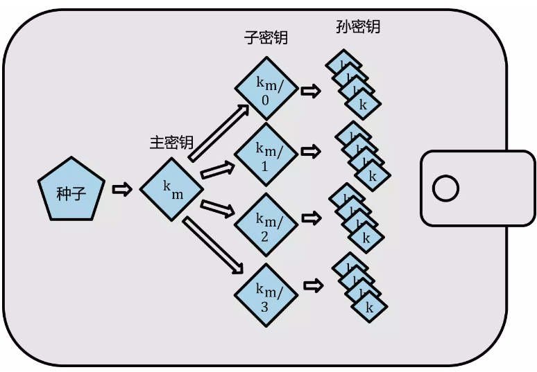
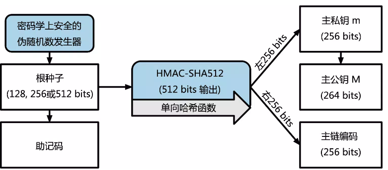
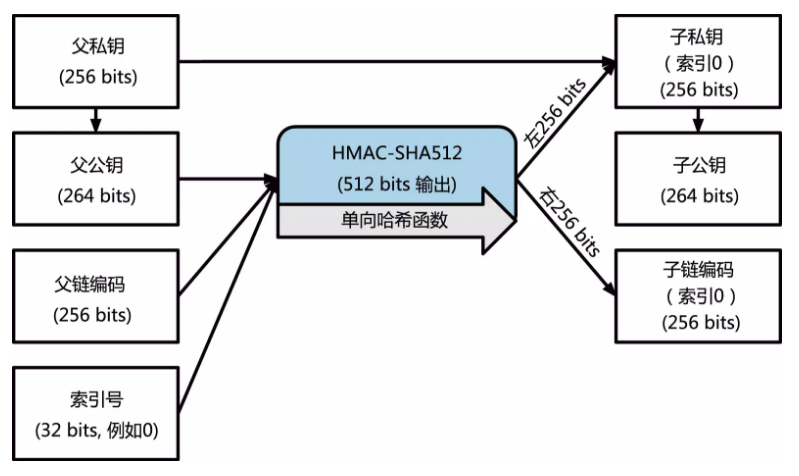
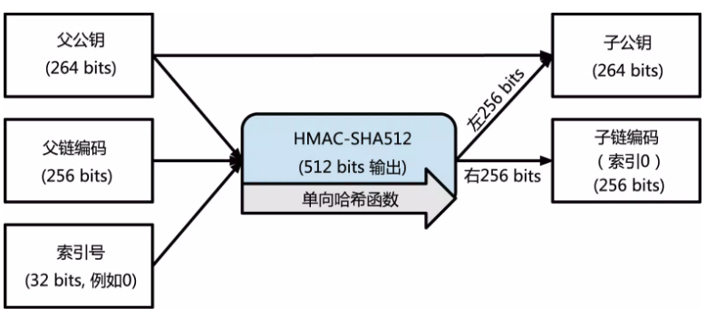
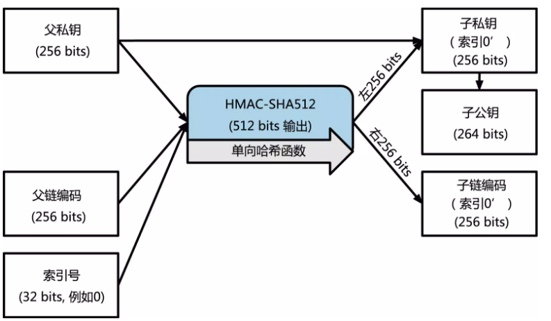

Blockchain-分层确定性钱包
分层确定性钱包（Hierarchical Deterministic Wallet）
wallets which can be shared partially or entirely with different systems, each with or without the ability to spend coins.
分层确定性钱包有着确定性和分层两个特点。确定性指的是由单一种子生成私钥，由种子即能确定对应私钥。分层指的是钱包为多层的结构，私钥可不由种子直接生成。
下面简称 HD 钱包，并以 BTC 为例，其他链如 ETH 因实现方式不同可能稍有区别。
钱包的分类
钱包通过可以分成非确定性钱包和确定性钱包，HD 钱包是确定性钱包的一种。
非确定性钱包
私钥都是随机生成，例如比特币钱包会预先生成 100 个随机私钥，然后通过单向加密生成配对公钥，用完之后再重新生成。所以如果不进行经常备份就有丢失的风险。
确定性钱包
私钥由公共种子经过单向哈希生成，种子足够收回所有的已经产生的私钥，所以只用在初始创建时的一个简单备份就足以搞定。
助记码词汇
因为二进制的公共种子不方便记忆，所以BIP-0039提出了助记码词汇来提升钱包用户体验。
BIP0039 定义助记码和种子的创建过程如下：
- 创造一个 128 到 256 位的随机顺序（熵）
- 提出 SHA256 哈希前几位，就可以创造一个随机序列的校验和
- 把校验和加在随机顺序的后面
- 把顺序分解成 11 位的不同集合，并用这些集合去和一个预先已经定义的 2048 个单词字典做对应
- 生成一个 12 至 24 个词的助记码。
- 使用 PBKDF2 函数，使用 HMAC-SHA512 伪随机生成器，以助记符句子和用’mnemonic’+passwor 生成的 salt 作为参数，迭代 2048 次，生成一个 64bytes，也即 512bits 的种子。
熵及字段长度：
| 熵（bits） | 校验符（bits） | 熵＋校验符 | 字段长 |
|---|---|---|---|
| 128 | 4 | 132 | 12 |
| 160 | 5 | 165 | 15 |
| 192 | 6 | 198 | 18 |
| 224 | 7 | 231 | 21 |
| 256 | 8 | 264 | 24 |
分层确定性钱包

HD 分钱包包含从树结构所生成的钥匙。这种母钥匙可以生成子钥匙的序列。这些子钥匙又可以衍生出孙钥匙，以此无穷类推。
分层确定性钱包的原理
HD 钱包从单个根种子中创建，为 128 到 256 位的随机数。HD 钱包的所有的确定性都衍生自这个根种子。任何兼容 HD 钱包的根种子也可重新创造整个 HD 钱包。所以简单的转移 HD 钱包的根种子就让 HD 钱包中所包含的成千上百万的密钥被复制，储存导出以及导入。以下资料主要来源于BIP-0032
转换函数及参数对应
- point（p）：返回由整数 p 表示的 secp256k1 基点的 EC 点乘法（EC 组操作的重复应用）产生的坐标对。
- ser32（i）：将 32 位无符号整数 i 序列化为 4 字节序列，大端存储(计算机术语)。
- ser256（p）：将整数 p 序列化为 32 字节序列，大端存储(计算机术语)。
- serP（P）：使用 SEC1 的压缩格式将坐标对 P=（x，y）串行化为字节序列：（0x02 或 0x03）|| ser256（x），其中头字节取决于省略的 y 坐标的奇偶校验。
- parse256（p）：将 32 字节序列转换为 256 位数，大端存储(计算机术语)
- k：私钥
- K: 公钥
- c: 链码
如何生成主密钥

如上图所示，根种子输入到 HMAC-SHA512 算法中就可以得到一个可用来创造主私钥和主链编码的哈希。然后通过主私钥得到主公钥。
子密钥衍生方程
分层确定性钱包使用 CKD（child key derivation)方程去从母密钥衍生出子密钥。
子密钥衍生方程是基于单项哈希方程。这个方程结合了：
- 母私钥或者公共钥匙（ECDSA 未压缩键）
- 链码（256 bits）
- 索引号（32 bits）
链码是用来给这个过程引入看似的随机数据的，使得索引不能充分衍生其他的子密钥。因此，有了子密钥并不能让它发现自己的相似子密钥，除非你已经有了链码。最初的链码种子（在密码树的根部）是用随机数据构成的，随后链码从各自的母链码中衍生出来。
扩展密钥
- 扩展私钥;由私钥及链码组成，用于衍生子私钥。即(k, c)。
- 扩展公钥;由公钥及链码组成，用于衍生子公钥。即(K, c)。
扩展密钥作为 HD 钱包中钥匙树结构的一个分支的根。你可以衍生出这个分支的剩下所有部分。扩展私人钥匙可以创建一个完整的分支而扩展公共钥匙只能够创造一个公共钥匙的分支。每个扩展密钥有 2^31 个普通子密钥，2^31 个硬化子密钥，这些子密钥都有一个索引，普通子密钥使用索引 0 到 2^31-1，硬化的子密钥使用索引 2^31 到 2^32-1。
衍生普通子私钥

母公钥——链码——以及索引号合并在一起并且用 HMAC-SHA512 方程散列之后可以产生 512 位的散列。所得的散列可被拆分为两部分。散列右半部分的 256 位产出可以给子链当链码。左半部分 256 位散列以及索引码被加载在母私钥上来衍生子私钥。计算过程如下：
函数 CKDpriv（（kpar，cpar），i）→（ki，ci）从父扩展私钥计算子扩展私钥：
- 检查 是否 i ≥ 2^31(子私钥)。
- 如果是（硬化的子密钥）：让 I= HMAC-SHA512（Key = cpar，Data = 0x00 || ser256（kpar）|| ser32（i））。 （注意：0x00 将私钥补齐到 33 字节长。）
- 如果不是（普通的子密钥）：让 I= HMAC-SHA512（Key = cpar，Data = serP（point（kpar））|| ser32（i））。
- 将 I 分为两个 32 字节序列，IL 和 IR。
- 返回的子密钥 ki 是 parse256（IL）+ kpar（mod n）。
- 返回的链码 ci 是 IR。
- 如果 parse256（IL）≥n 或 ki = 0，则生成的密钥无效，并且应继续下一个 i 值。 （注：概率低于 1/2127）
改变索引可以让我们延长母密钥以及创造序列中的其他子密钥。比如子 0，子 1，子 2 等等。每一个母密钥可以有 2^31 个普通子密钥。
向密码树下一层重复这个过程，每个子密钥可以依次成为母密钥继续创造它自己的子密钥，直到无限代。
子公钥匙推导

分层确定性钱包的一个很有用的特点就是可以不通过私钥而直接从母公钥派生出子公钥的能力。这就给了我们两种去衍生子公钥的方法：通过子私钥，再或者就是直接通过母公钥。因此，扩展的公钥可以在 HD 钱包结构的分支中，被用来衍生所有的公钥（且只有公钥）。
母公钥——链码——以及索引号合并在一起并且用 HMAC-SHA512 方程散列之后可以产生 512 位的散列。所得的散列可被拆分为两部分。散列右半部分的 256 位产出可以给子链当链码。左半部分 256 位散列以及索引码被加载在母公钥上来衍生子公钥。计算过程如下：
函数 CKDpub（（Kpar，cpar），i）→（Ki，ci）从父扩展公钥计算子扩展公钥。它只针对未硬化的子密钥定义。
- 检查是否 i ≥ 2^31 (子密钥是否是硬化密钥)
- 如果是(硬化子密钥)：返回失败
- 如果不是(普通子密钥):让 I= HMAC-SHA512(Key = cpar, Data = serP(Kpar) || ser32(i)).
- 将 I 分为两个 32 字节序列，IL 和 IR。
- 返回的子密钥 Ki 是 point（parse256（IL））+ Kpar。
- 返回的链码 ci 是 IR。
- 如果 parse256（IL）≥n 或 Ki 是无限远的点，则生成的密钥无效，并且应继续下一个 i 值。
衍生硬化子私钥

从扩展公钥衍生一个分支公钥的能力是很重要的，但牵扯一些风险。访问扩展公钥并不能得到访问子私钥的途径。但是，因为扩展公钥包含有链码，如果子私钥被知道或者被泄漏的话，链码就可以被用来衍生所有的其他子私钥。一个简单地泄露的私钥以及一个母链码，可以暴露所有的子密钥。更糟糕的是，子私钥与母链码可以用来推断母私钥。
为了应对这种风险，HD 钱包使用一种叫做 hardened derivation 的替代衍生方程。这就“打破”了母公钥以及子链码之间的关系。这个硬化衍生方程使用了母私钥去推导子链码，而不是母公钥。这就在母/子顺序中创造了一道“防火墙”——有链码但并不能够用来推算子链码或者姊妹私钥。强化的衍生方程看起来几乎与一般的衍生的子私钥相同，不同的是是母私钥被用来输入散列方程中而不是母公钥。
当强化私钥衍生方程被使用时，得到的子私钥以及链码与使用一般衍生方程所得到的结果完全不同的。得到的密钥“分支”可以被用来生产不易被攻击的扩展公钥，因为它所含的链码不能被用来开发或者暴露任何私钥。强化的衍生也因此被用来在上一层级，使用扩展公钥的的密钥树中创造“间隙”。
简单地来说，如果你想要利用扩展公钥的便捷来衍生公钥的分支而不将你自己暴露在泄露扩展链码的风险下，你应该从强化母私钥，而不是一般的母私钥，来衍生公共钥匙。最好的方式是，为了避免了推到出主钥匙，主钥匙所衍生的第一层级的子钥匙最好使用强化衍生。
正常衍生和强化衍生的索引号码
用在衍生方程中的索引号码是 32 位的整数。为了区分密钥是从正常衍生方程中衍生出来还是从强化衍生方程中产出，这个索引号被分为两个范围。索引号在 0 和 2^31–1(0x0 to 0x7FFFFFFF)之间的是只被用在常规衍生。索引号在 2^31 和 2^32–1(0x80000000 to 0xFFFFFFFF)之间的只被用在强化衍生方程。因此，索引号小于 231 就意味着子密钥是常规的，而大于或者等于 2^31 的子密钥就是强化型的。
为了让索引号码更容易被阅读和展示，强化子密码的索引号码是从 0 开始展示的，但是右上角有一个小撇号。第一个常规子密钥因此被表述为 0，但是第一个强化子密钥（索引号为 0x80000000）就被表示为 0’。第二个强化密钥依序有了索引号 0x80000001，且被显示为 1’，以此类推。当你看到 HD 钱包索引号 i’，这就意味着 2^31+i。
路径
使用树形结构数据的物化路径，如下
m / 0 / 1
m 是主私钥，0 为第一层衍生子密钥里序号 0 的密钥，1 为序号 1。所以 m/0/1 表示的是主密钥下的序号为 0 的衍生子密钥下的序号为 1 的衍生子密钥。
相关钱包实现
Lisk
Lisk只实现了确定性钱包和助记码词汇，并没有实现分层的钱包结构。
钱包后续改进
BIP43
BIP-0043在原有路径的基础上引入了用途属性。
路径如下：
m / purpose’ / 1
purpose 是地址的目的，例如 m / 0’ / * 已由 BIP32 采用，作为默认账户。
BIP44
BIP-0044在 BIP43 的基础上，提出了一个多币种、多账户的路径表示。
m / purpose’ / coin_type’ / account’ / change / address_index
如上路径表示，purpose 为 44’。
- coin_type，币的类型，如 0’为比特币，60’为以太坊，具体可参考coin-types
- account, 账户，通常衍生出不同的账户用于不同的功能，比如捐赠、储蓄等。
- change 由找零地址而来的功能，0’表示用于外部，1’用于内部，也即 1’通常为用户不可感知。
- index 序号
具体可参考如下例子
| coin | account | chain | address | path |
|---|---|---|---|---|
| Bitcoin | first | external | first | m / 44’ / 0’ / 0’ / 0 / 0 |
| Bitcoin | first | external | second | m / 44’ / 0’ / 0’ / 0 / 1 |
| Bitcoin | first | change | first | m / 44’ / 0’ / 0’ / 1 / 0 |
| Bitcoin | first | change | second | m / 44’ / 0’ / 0’ / 1 / 1 |
| Bitcoin | second | external | first | m / 44’ / 0’ / 1’ / 0 / 0 |
| Bitcoin | second | external | second | m / 44’ / 0’ / 1’ / 0 / 1 |
| Bitcoin | second | change | first | m / 44’ / 0’ / 1’ / 1 / 0 |
| Bitcoin | second | change | second | m / 44’ / 0’ / 1’ / 1 / 1 |
| Bitcoin Testnet | first | external | first | m / 44’ / 1’ / 0’ / 0 / 0 |
| Bitcoin Testnet | first | external | second | m / 44’ / 1’ / 0’ / 0 / 1 |
| Bitcoin Testnet | first | change | first | m / 44’ / 1’ / 0’ / 1 / 0 |
| Bitcoin Testnet | first | change | second | m / 44’ / 1’ / 0’ / 1 / 1 |
| Bitcoin Testnet | second | external | first | m / 44’ / 1’ / 1’ / 0 / 0 |
| Bitcoin Testnet | second | external | second | m / 44’ / 1’ / 1’ / 0 / 1 |
| Bitcoin Testnet | second | change | first | m / 44’ / 1’ / 1’ / 1 / 0 |
| Bitcoin Testnet | second | change | second | m / 44’ / 1’ / 1’ / 1 / 1 |